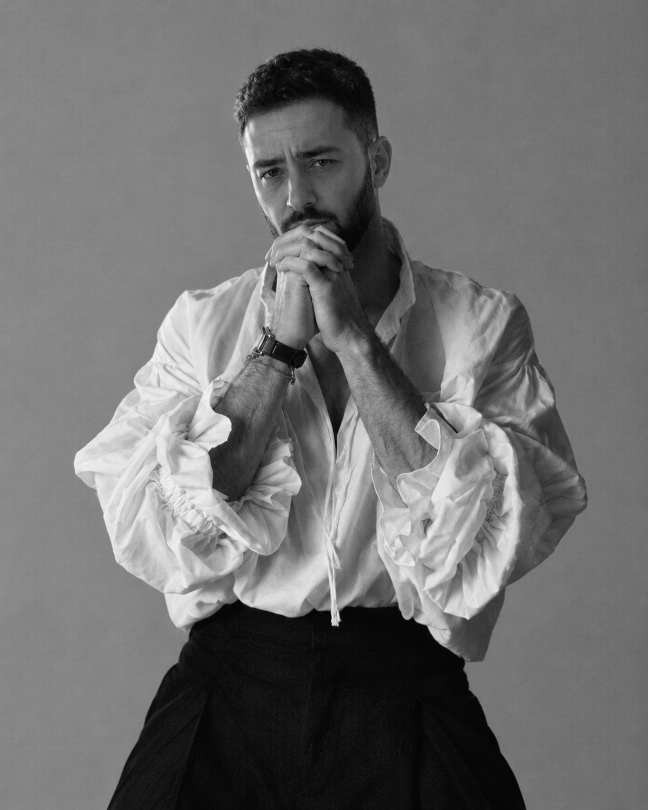

На фотографии мужчина с выразительной, мужественной внешностью. У него тёмные густые волосы с аккуратной короткой стрижкой, выразительные брови, глубокий взгляд и ухоженная борода, подчёркивающая черты лица. Внешность достаточно контрастная: тёмные волосы и борода выделяются на фоне светлой кожи и монохромного изображения. Одежда добавляет образу особую эстетику: свободная белая рубашка с объёмными рукавами, расстёгнутый ворот и тёмные брюки создают сочетание небрежности и элегантности. Поза с соединёнными у лица руками, слегка нахмуренный лоб и направленный прямо в камеру взгляд создают впечатление задумчивости и сосредоточенности.
-p.s эт мнение ии
